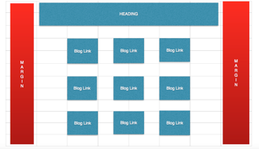
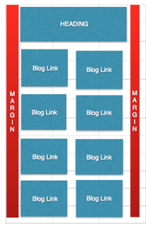
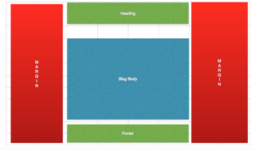
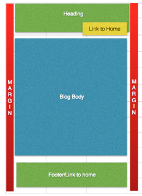

A responsive site is built with compatibility in mind, so that the site can be accessed by different devices of various pixel size.
Mobile first is designing the site with mobile devices in mind. As mobiles have the smaller screens and general are not powerful enough to render comprehensive sites. By creating the mobile site first, it can be a lot less frustration when certain things don’t work out as it is easier to adjust at this point.
Firstly framework is a package or pre developed code that allows for the creation of a site quickly as it can creates the bones of the site. This allows for developers to not spend too much time on the basics of the page and starting from scratch every time a webpage is made. However some cons to this is by using a particular framework is a developer then becomes restricted into using that particular style. Frameworks may also provide a lot of unnecessary code, which could potentially slow down the site.
Wireframes are a way of laying out a site in the beginning stages, usually done using a twelve column system as a way to divide the site and then easily add content into the site. Below are my example of a Wireframe and how I originally tried to create the site.
   I found It difficult to arrange to buttons side by side on the mobile platform as you couldn’t read the words inside and it looked messy.